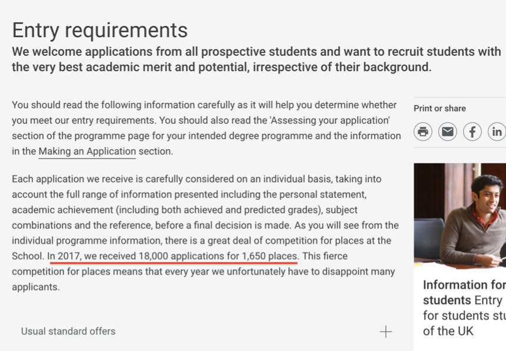
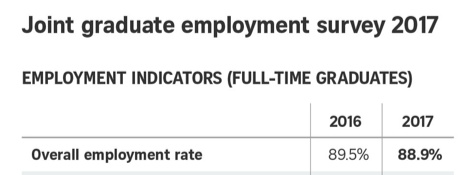
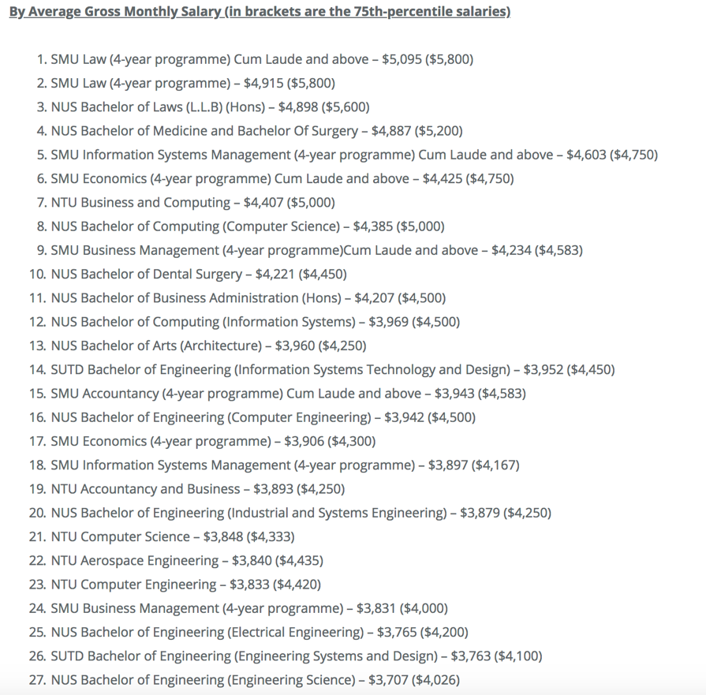

Imagine setting your own schedule and attaining better grades studying less while enjoying yourself than you’re attaining in a whole week’s worth of mudding through what feels like an endless chore of work...
imagine sustaining and improving your stellar exceptional academic grades, adding a side-hobby partying, hanging out with friends, or wakeboarding on the weekends if you choose to...
If you'll stick with me for a few more minutes, I'll share the incredible insights I've learned about attaining and improving the academic success in your life, all while having fun and getting more freedom to do what you truly love.
It’s about me but it just may be about YOU too...
While I’m a highly sought after strategic academic consultant with multiple scholarships from the world’s best universities and have the freedom to travel across the globe...
If you think I was gifted this way, let me tell you what really happened.
You see, over 4 years ago, I was a social, academic, and emotional wreck.
I was a Junior College student, and I just shut myself off from the world in my lonely room playing computer games everyday while other students were busy eating out or partying after school.
Even if I could get to their meeting, I didn’t have a clue what to say or do to fit in...
So after I’d just slink back to my little corner of the group...
And feel sorry for my pathetic social life.
I was an average Cs and Ds student, with the occasional A mark, but was also the lowest scorer of my English Literature cohort at other times.
After many months of being in academic and social hell...I decided something...
I was going to try very hard at mastering the subject just like I did in my rigorous academic studies. I decided to work up the courage to attend meetups, and tried extremely hard to connect and engage in the latest gossip news, and even chased girls who didn’t reciprocate my affection.
It turned out to be a lot of work...but I managed to fit in with my friends...and achieved straight As for my A levels!
I became almost delusional high on my academic successes and felt I was on top of the world!
I applied to all the top university courses that I could find on the internet.
And I decided to try for every scholarship that could use such a talent like me (looking back now rather embarrassingly).
I started reading up columns in the Cambridge law journals... and watched Youtube lectures of numerous law professors and purchased all the required law books for admitted students before I even submitted my application.
It was like an egotist’s fantasy came true. Everyone congratulated me on my stellar academic results...and I was all set to enter law school and make my parents proud...
So, I attended the interviews full of confidence.... Until a year later while I was in the military..
When my parents asked how I fared for my university results...I lied that I didn’t receive it yet...and it made me miserable.
I couldn’t face my parents as a disappointment and a failure... despite having worked so hard but still slip up....
In a matter of weeks, I was standing at the end of my bunk corridor in the military camp staring at the rooftop access ledge, looking down during the wee hours of the morning...trying to work up the courage to end the pain once and for all...
I was rotting away inside.
I burst out sobbing and dialed a final call to my parents...it was so embarrassing but I just could not keep it inside anymore. Thankfully, they rescued me off the edge and encouraged me to call the counselling hotline which supported me through my depression.
I thought that if...
... I would have succeeded as a human being and had value living.
Essentially, because I had used my grades, success academically, socially and my family’s opinions of me to make myself feel good about myself...
I constantly monitored my progress with these external "results" that I’d gotten...
But I had forgotten WHY I was doing so.... I had lost the intrinsic enjoyment and fun of doing well...and the meaning of chasing those things...
Basically...this is how most people think about grades and chase the results they want:
It made me reflect deeply on myself and what it means to succeed.
Promise me you will never chase after the end results anymore
Trying to"get" the end goal for the sake of it never works for at least two reasons (and there’re more but let’s start with 2 for now).
Why then, do so many people still get drawn into results-oriented thinking in order to achieve?
Simple:
Because of Fear.
Fear that you won’t be able to get the end result that you want or desperately need….
Fear that you won’t be able to receive anything in return…
Fear of making mistakes… and so you don’t truly learn…
Fear that your pride and ego will be damaged or ruined – your reputation will be tarnished and you will look bad in front of others for messing up…
Fear that you’ve just wasted your time on an endeavor that doesn’t give you the results that you want…
And most of all…fear that you aren’t good enough and weren’t really worthy of that goal in the first place.
Deep down inside, what sabotages all endeavours is…
We all have this fear.
It is this little voice in our heads that will make us doubt every step of the way…
I’ve witnessed close friends and past students who made it 90% of the way… only to self-sabotage themselves and talk themselves out of it because they feel “unworthy” of deserving that success.
We are not successful because we feel deep down that we do not deserve it.
This may seem simple, but it’s one thing to know theoretically in your head…
And it’s another to experience this transformation deep down when applied through experience.
I realised how important mindset and “inner work” was needed to allow myself to succeed.
I started to figure out what exactly got people the attractive results that they wanted. And then I was going to devise a step-by-step system I could teach myself to become that exceptional student.
Eventually, after thousands of hours of anguish and heartache…I finally cracked the code.
I understood exactly what universities and scholarships were looking for in an applicant.
And I was able to teach myself how to show them I had it and…
MY LIFE CHANGED OVERNIGHT.
I reapplied to 8 different universities and scholarships…and EVERY SINGLE ONE of my applications were accepted.
Does this work with other people? Well…my students have successfully applied to Oxbridge and many top universities in various disciplines such as Law, Philosophy Politics & Economics (PPE), Medicine, Computer Science, Physics, Maths, International Relations, History, Engineering, English Literature, and Chemistry.
Exploring deeply the fields of psychology, human behavior, peak performance and many other disciplines…
To discover, test, and systemize the secret steps to attaining, maintaining, and growing your success academically and beyond.
And I put them all into my new course –
Although this might be the first you’ve heard of all this… and you may be feeling shocked like this is all new to you…
I’m guessing that you—like me—have felt as if something has been missing from your student life for a very long time now…
This hunch can’t be described very well with words…
We know that, as students, we SHOULD feel or act a certain way, and we want to feel that way…
Perhaps it’s certainty about doing well in school, or being an all-star who is great at school and outside school, or having the fortitude to weather mistakes, or simply regaining the enjoyment of true learning…
Whatever it is, it’s like that nagging feeling that never quite makes it significant enough to resolve…
One of the greatest challenges as a student is feeling anxious, frustrated, and unable to get what you want… but to not know the SOURCE of this… or a way to overcome it RELIABLY and CONSISTENTLY.
What we have known all along is that these feelings prevent us from achieving peak success in school, and in life.
Feeling that there’s a missing purpose and meaning to being a student, and wanting to fill that void is bad enough…
What makes it unbearable is that the one thing that we want at every level more than anything—self-worth and feeling good enough—is tied DIRECTLY to this particular issue.
So... I'd like to show you how to put all this behind you... and finally become the outstanding student you were meant to be
I’ve spent the last 3+ years crafting together a comprehensive course on both academics and social life — designed to completely equip you with the mind-sets, strategies and skills inside of you that you can use for the rest of your life… and transform you into the passionate, confident, outstanding student that all schools, peers and professors are looking for.

You'll learn how to prime yourself for success and the right mindsets to adopt. We'll cover
You'll discover how to learn and master almost anything you want in your life and excel within the top 1%
You'll learn how to set yourself up for success by creating a peer group and network that works for you
You'll discover how to handle conflict (aka how to negotiate & deal with people & still get what you want easily)
You'll learn how to manage your time, energy & health & crush it in life as a student
You'll learn how to get someone to pay for your university experience
Get instant access to the entire Academic Mastery community, including hardworking students just embarking on their journeys, intelligent individuals searching for greater meaning and purpose in school, and peak performing scholars, graduates, alumni who are confident in themselves and crushing it within and beyond school. You'll always have a network you can turn to when you need to ask questions, learn advanced lessons, and hold yourself accountable. And lifetime access to this private community is included.
Even more, I’ve added yet another bonus that’s just as, if not more, valuable…
No other online course comes with such direct access to the course creator, so that you can ask me personally whatever questions or issues you may have. As often as I can, I’ll hop into the online community to interact with you directly. This represents an un-scalable time investment from me and my team, but that’s how much I believe in the strength and value of this program. My team and I will be here to help hold you accountable, ensure you stay on track, and guide you step-by-step through the program, so that you can finally attain consistent results and complete freedom in your academic and social life as a student.
In case it wasn’t clear, all members of Academic Mastery get access to the program… for LIFE. With lifetime access, you can progress at your own speed, even take a break if you need to… if you’re out of town, on vacation, or just swamped for a few days. Interruptions happen, and your AM course and the supportive community will ALWAYS be here for you when you’re ready.

We are looking to work with you to significantly achieve and expand your successes academically and socially, so read closely.
This is important.
If we’re making you excel in the coming few months of the course, we have to be clear on one thing.
Your results are not going to improve dramatically without your full commitment. We are looking for committed and driven individuals who want a bigger future. Fortunately, I’m in the enviable position of not needing to appeal to everyone — just the right people.
I’d rather work with a small group of students who are committed to leveling up in life… than a lot of random people just looking for the next magic pill.
You’re serious and ready to invest in yourself and develop the psychological maturity, emotional intelligence, and self-confidence that will continue to pay off for the rest of your life in school and with other people.
You’re looking for a step-by-step FRAMEWORK, not just some random techniques.
You’ve got the fortitude, discipline, and tenacity to stick through an intensive 6-week process of transformative growth.
Here’s what other students like you are succeeding with Academic Mastery:
Testimonials to comesIf you are a prospective tertiary student…
Admission to competitive courses e.g. law, medicine, dentistry, architecture are highly demanding…requiring interviews and tests
Places are limited and in high demand with an overwhelming number of applicants(“competitors”)
These are the number of places available for some of the top courses offered at Singapore universities
There are shocking few places available compared to the thousands of applicants competing with you…
In fact, Yale-NUS has released its admission rates publicly, with a 5% average acceptance rate over the last 5 years.
Not only are the acceptance numbers stacked against your favour, quite literally…
but also who you’re competing against. How can this be true?
Take a look at the 10th to 90th percentile of accepted students for various courses, basically 90% of your competition who got an offer.
Top universities in other countries such as the United Kingdom are just as hard.
The London School of Economics (LSE) has an acceptance rate of about 9.8% (only 1 in 10 applicants are offered a place).
Every competitor has equally good grades.
(i.e. 90% of law applicants have AAA/A qualifications)
So…where is your differentiating X Factor?
This course turns you into a self-propelled learning machine.
This course will introduce you to an entirely new way of looking at school.
Smart, successful students learn more, in less time, earn higher grades, and have more fun in the process.
This course shows you how to become one. And anyone can become one.
But how can this be true? Aren’t they just born gifted that way?
Until now, your learning has probably been a hit-or-miss – frustratingly inconsistent and inefficient.
No one bothered to teach you the most fundamental academic skill: How to learn.
Everyone (and perhaps you) probably assumed you were either born with the talent or not.
Everyone learns naturally from birth as a baby, but learning in school is a different case.
Schools are structured in a way that doesn’t fit how you learn best.
What if you’re already a smart student?
It doesn’t matter. Your misconceptions about school and how to learn are probably making school a lot harder than it has to be.
You could be freeing up so much more time and energy, with so much less stress…
You’ll also discover new ways to socialise, deepen your connections with other people, and maximise your time outside of schoolwork.
What would it be worth to you to excel in school and have so much freedom and fun while doing it?
On the other hand…
If you don’t take this course and learn how to enjoy school…
Well, this is one pile of books I had to read to fully prepare for this course.
I then had to take notes and summarise the information. Round Two.

Round Three was probably another 1000 pages of notes and further remaking (you don’t remember everything first-pass through).
Can you imagine doing that and hating every moment of it to study for a single test in school?
The fonts are small…everything feels so boring to read…meanwhile you’re thinking about what’s for dinner or who you’re going to meet later or…
Imagine how many torturous hours, sleepless nights and all-nighters you’d have to pull…
But you can also learn how to enjoy school by yourself through self-help books and other personal development resources…right?
Here’s what the local bookstore offers you.
This is the amount of books in your local bookstore you would have to sift through to find valuable pieces of advice (and good books are rare and few)
At this point you must be thinking…UGH I want to get results in school and socialise but I don’t want to go through all that junk just to learn the important bits.
Here’s what the Academic Mastery course offers:
Basically, you have three options here.
First option, you can give up on your dreams and all the benefits of being an exceptional student and continue doing what you’re doing (with a little bit of pain).
But let’s be frank, you wouldn’t have read up to this point if you wanted that.
You’re here because you believe that you deserve a better school and lifestyle than the one you have now.
Second option, is that you can study on your own.
Again, it’s very tough and time-consuming without the shortcuts we know…
and this is an option for people who are strong in synthesising large volumes of information from various diverse sources into practical usable things to apply.
Or third option, is that you enroll in our course.
It gives you step by step guidance on exactly how to achieve consistent results and complete freedom in your academic and social life as a student.
Forget the self-help textbooks, this is what you need. One seminar series. One 3-day course. That’s it.
Also, the recordings will be edited, remastered, and made available on our private site…
So you can go back and review it as much as you want…
and you can have it to watch any time you need it… forever.
I’ve decided to set the investment for this course not at $10,000… or even $5,500… or even $3,500.
After all, The Straits Times found after surveying now over 11,000 fresh graduates from five local universities that…
"Nearly nine in 10 graduates…found jobs within six months of their final examinations.” – The Straits Times Singapore
The survey also found that ...
Fresh local graduates who attained a Cum Laude and above commanded significantly more average monthly salaries.
Graduates who fared near the top of the cohort also commanded higher salaries.
Years from now, when you’re looking back, how are you going to feel if you could have been experiencing incredibly amazing student life and grades, and finding it easy to befriend the peers who would make you truly happy for the rest of your life, just by taking a simple, walk-you-through-it course?
Looking back, how much more opportunities and salary are you going to command if you could attain better results in school?
If you’re in a university already, you definitely need to take Academic Mastery because you may be just weeks from some serious trouble with schoolwork or people, unless you're already deep in it.
And yes, even if you’re still a prospective student, you need to be working on this for several reasons. First, you can only keep up an “act” in an application for so long. You can totally get to the interview stage with the typical application... but once you find yourself in the interview, you’ll quickly find that the ‘facade is up’ and that interviewers are noticing the cracks in your exterior and can no longer trust you to be as confident or able as you say you are. They might test you with tough questions, or just put you on edge in a “moment of silence” where you hold court with them, but your non-verbals give away your uncertainty or anxiety, no matter how bad you try to hide it.
Also, there’s the fact that you’re never really “done” with improving yourself... including once you have great results in school. There’s something called the “once and done” myth, where people believe, “Oh, once I have that A and got a stamp of approval from my professors, or once I got an awesome circle of friends, I’m GOLD. I can just work on my hobbies and the school and social game is just automatically taken care of.” As much as every movie in Hollywood strokes this “happily ever after” myth, the real truth is that it takes actually some careful effort to have an amazing time... one where both your schoolwork and social life can complement AND support you in a way that never gets old. This is something you have to start BEFORE you need it... because once you’re in a pinnacle of success, you’re already in damage control and becoming complacent if you don’t know this.
Yes, absolutely. In fact, after their initial surprise, they will probably thank you for it. After all, you're doing it not just for you, but for your peers too (peer group effect). And, you might just inspire them to invest in themselves, as well!
Don't worry: Academic Mastery -- including the seminar and all 5+1 weeks of online video modules beautifully presented in your membership site accessible from anywhere at any time, the 24/7 online support community, the direct access to Joel and Ivan personally, and all the PDF course materials -- comes with Lifetime Access. So you can take a break from the material if you’re out of town, travelling, or just swamped for a few days. Interruptions happen, and Academic Mastery will ALWAYS be here for you when you're ready.
Yes, Academic Mastery will help you. I've derived what I teach in this course from people from almost every continent in the world for over 3 years.
I call this “Special Snowflake Syndrome,” where we believe something in our lives is so unique, nothing will ever help. At some point, you’re looking for an excuse not to join. My goal is to show you that is not true, that it's just a crippling excuse. I've tested this material with beginners, experienced students, Asians, Americans, British, Canadians, Chinese, Indians, and yes, this includes both morning and night people. If you truly believe you are so unique that 3+ years of the most comprehensive material on succeeding in your academic and social life will not help you, then please don’t join!
No. This is an entire system, not a series of disconnected tactics.
If you cannot attend the live seminar, or any part of it, the recordings will be edited, remastered, and made available on our private membership site so you can go back and review it as much as you want and watch any time you need it. You can also clarify any questions through the online community.
Yes! Take a look at the pricing tables for more details.
No, there are no hidden fees or costs. Everything that is included in the program tuition is clearly outlined in the page description before you register. This includes the venue and logistics cost for the live seminars.
No, this seminar series is non-refundable given the live nature of the event.
We may have plans to reopen this program, but THE PRICE MIGHT INCREASE. The current offer is that we’ll keep it at this price. So get it early, even if you cannot attend the live event ;)
Academic Mastery is the only academic and social course that applies the best cutting edge scientific research of psychology and other practical fields to the reality of modern student conditions, including the current tuition crisis afflicting so many students around the world – that there is something wrong with the student. No other program begins with the premise that something is wrong with school, includes an entire system on how to mould school to their needs instead of accepting school as it is, and contains coursework successfully tested for over 3 years with hundreds of students.
All this beautifully packaged into a proven, step-by-step system so that you can finally attain complete confidence, freedom and joy in your academic and social student life. This step-by-step system is based entirely on rigorous scientific research. My own training and development is largely conducted by academics, so it's in my nature to teach only what's been backed up by empirically verified results.
Academic Mastery’s methodologies are based on science. This includes cutting edge research from neuroscience, psychology, and other behavioural and natural sciences conducted in universities around the world which form the core of our curriculum. These work in any country with human beings!
I am an international creative producer myself, and worked with global travel organisations and artists, and provide reviews for travellers, and travelled to 70+ destinations. And I bring all my international experience to bear in my coaching. Our community also includes men from all over the world.
Yes, a major bonus component of Academic Mastery is direct access to personal guidance from Joel and Ivan personally inside the online support community, available to you 24/7 for life. So yes, we will be on hand to do our best to handle your personal, individual questions and problems during the program.
It's good for me to meet this kind of scepticism because in my life and work, I am constantly surrounded by people who transform themselves and see massive success on a daily basis, not just with school, but from life.
Look, instead of telling you about the rare cases when someone didn't soar as high as we had hoped, let me tell you about the many that did: They are hungry. They consume the material again and again. They follow the program. And they are in the REAL WORLD and apply and practice what they've learned.
So if the confident "feelings" disappear, or they didn’t get what they hoped, they review the lessons or re-watch the videos. They keep in touch with their fellow members through our private support groups. They really dedicate energy and time and a lot of themselves into this area of their lives and that's why they receive a lot from it. They've given us their trust, and they've experienced enough results to continue to give us more. They become success stories over time.
There are a few pseudo-whack books claiming to teach students how to earn high grades without learning much, but these books are missing the point.
This course teaches you to learn as much as you can and earn high grades, but just not sacrificing any unnecessary time and being sleep deprived doing so.
I would love to have you on board. At this point, the choice is entirely yours and I trust you will make that leap of faith with me. If not, thanks for reading this far, and I wish you the best.
During the 3+ years I spent researching the material for Academic Mastery, I tried all of the best courses and self-help books in this area only to find that they regurgitated more of the same old, rehashed, generic info, obvious, trite or impractical recommendations.
I tried very hard to follow some of their suggestions, but I lacked the super-discipline their suggestions necessarily required. And many only resulted in very superficial understandings and no real consistency.
I realised that any student who could do these impossibly hard things wouldn’t need help with school in the first place.
But they were very miserable in doing so and didn’t enjoy it. Or they spent so much time and headspace with schoolwork that they neglected their social life and was lonely or bored to tears. Some had very little energy and no physical or mental health.
That's not good enough for me, for Academic University, or for my clients.
Almost every student I spoke to told me I had to sacrifice and give up either one or the other, choosing to compromise between grades, a social life, health, sleep, and time.
But I wanted to be able to enjoy learning while doing well in school, and be able to have an awesome social life at the same time.
That's why I invested thousands of hours and thousands of dollars of my own money into developing this course, flying around the globe to consult the world’s top researchers and students, personal development and peak performance coaches, creating brand-new curriculums, testing them, hiring top-tier staff, and putting together the best lessons ever.
I know this material works. I only care about developing the highest quality lessons, full of proven methods, mindsets, strategies, systems, psychological experiences, and more that you can't find anywhere else.
And I'd like to share it with you if you're ready to use it to experience complete confidence, freedom and joy in your academic and social life.
Now is the time to step up and act. Because there is a live support component to this program, we have to close registration for this course once the timer hits 00:00:00.
How to purchase
359 SGD
3 Monthly Payments
Total = $1070
Save $180
Invest upfront
Total = $897
Warning! This special offer expires in…
| Days | Hours | Minutes | Seconds |
Register right now for “Academic Mastery” and get all 3-days of live seminars, 40+ hours of video and audio course material, the PDF cheatsheets, the online support community, direct access to personal feedback from Joel Ong and Ivan Leo, and all easily accessible 24/7 for you… for LIFE.
Start becoming the confident, outstanding student who attracts the most amazing peers to you, so you can enjoy immersive social relationships and have complete confidence, freedom and joy in your academic and social life.
359 SGD
3 Monthly Payments
Total = $1070
Save $180
Invest upfront
Total = $897
Warning! This special offer expires in…
| Days | Hours | Minutes | Seconds |
If you have any questions or concerns about the program, just email me.
I’m happy to help. Click here to send me a direct message